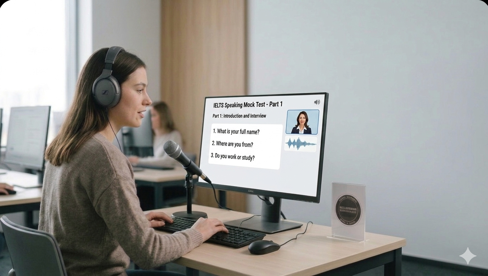

Part 1, Part 2, Part 3
IELTS Speaking Simulation
Practice cue cards and speaking tasks with a preparation timer, recording tool, and instant feedback.

Part 1: Introduction
Answer with a brief opinion and example.
Explain why and compare both.
Part 2: Cue Card
Describe a special gift you received
- What the gift was
- Who gave it to you
- When you received it
- Why it was special
Part 3: Discussion
Do you think people will watch fewer live performances in the future?
Practice extending your answer with reasons and examples.
Speaking practice tools
Record your response and click Analyze Speaking to see a summary of fluency, pronunciation, grammar, and vocabulary.